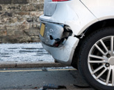
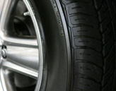
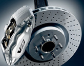
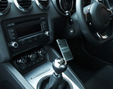
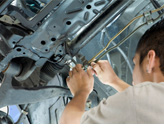
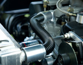
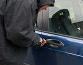

Buyers Guide
It's well worth your while inspecting the car prior to bringing it to a mechanic for its final inspection. Below we have put together a guide with some tips to help with this inspection. You may also be interested in our Car Check and Car Insurance partner.
Car buyer guides: What to look for -->

Body Condition
- Look at the lines of the wings and doors. Large gaps or misaligned panels indicate a sloppy repair.
- Look for scratches, dents, and rust on the roof and the car panels. Check that the gaps between the panels are even.
- Remember that rust can look innocent enough at first but can get bad quickly and is expensive to fix.
Exterior
- Pull the top of each tyre back and forth. If you feel play, or notice a clunking noise, there may be an issue with the wheel bearings or suspension joints.
- Check that the car is standing level, you do this by walking around the car and if it sags to one side, it may have a suspension issue.
- Bounce each corner of the car up and down. If the shocks are in good shape, the car should rebound just once or twice and not multiple times.
- Look to see if there are signs of excessive paint chipping around the front of the car.
Lights
- Have the person who accompanied you stand outside the car and confirm that all lights are working ok.
- Test both high-beam and low-beam headlights, parking lights, indicators and fog lights.
- Ensure light lenses are fully intact, not cracked and fogged with moisture.
Has it been in a crash?
- The obvious thing to do here is to ask the owner.
- A car history check will reveal if the car has ever been written off.
- Look to see that paint colour is uniform. It's quite difficult to duplicate the texture and finish of a manufacturers paint effect.
- If you suspect that a dent may have been covered over, use a magnet. If a dent was filled with plastic body filler, the magnet won't stick. Obviously this test won't work if the car has plastic or fibreglass parts.
- Look for signs of over-spray or paint adhering to the rubber seals around the car body openings.
- Usually minor cosmetic flaws are no cause for concern, but rust is. Look particularly for rust spots around the wheel wells and the sheet beneath the doors and the bottom of the doors themselves.
- You should use a torch to look inside the wheel wells for rust.
- Open and close the doors, bonnet and the boot. You need to check that they work freely on their hinges and close smoothly.
- Gently lift and let go of each door. If the door is loose on its hinges, the vehicle may have seen hard use.
- Inspect the rubber seals around all openings to be sure they're intact.

Tyres
- Your vehicle's tyres say a lot. If the vehicle has less than 25,000 miles on the clock, it will probably still have its original tyres. If a car with low mileage has new tyres, think!
- If there are different tyre brands or sizes on the car, ask why.
- Check that tread wear is even across the width of the tread. It should also be the same on both sides. Aggressive drivers usually tend to put a lot of wear on the outside of the tyre. If the shoulder has a lot of wear the car may have been driven hard!
- Lightly stroke the tread on each tyre with the flat of your hand. If you feel raised parts, it may not be aligned properly. This symptom could point to a simple maladjustment or an expensive suspension problem. Tyres with this type of wear tend to make the steering wheel vibrate at high speeds.
Glass
- Examine the windscreen and all the other windows to make sure there are no cracks.
- A small bulls-eye from a stone is probably not something to be worried about, though you might be able to use this as something to negotiate on.
- Cracks on the windscreen often get worse over time and could lead to pricey repairs.

Brake Discs
- It is important to check the rotors on the disc brakes. Most vehicles have disc brakes in front and drum brakes in the rear; some cars have disc brakes on each wheel. Cars with ABS have disc brakes all round.
- Use a torch to see through the front wheel rims. The rotor discs should be not have any deep grooves, and should be smooth. No need to worry about traces of surface rust on the discs.
- The discs should look clean and smooth after you have used the brakes during the test drive.

Inside the Car
- Smell the car. Does the car have a mouldy, musty smell? This could be an indication that the car has water leaks. Such leaks can be very awkward and costly to find and fix.
- Take out the mats, and look for damp spots on the carpet.
- Inspect the pedal rubber. Are there signs of excessive wear? This is a good indication of use. Look at the rubber on the clutch, brake and accelerator pedals. If the car has low mileage it shouldn't show too much wear. High mileage shows itself through worn spots.
- If the clutch pedal is badly worn it may mean the last owner was in the habit of riding the clutch, which could cause clutch and gearbox problems for you.
- Look to see if the numbers on the meter appear stretched, or misaligned.
- Start up the car and let it tick over. Notice if it's hard to start when cold. Note that the seller may have started up prior to your visit. Also check whether the engine ticks over smoothly.
- Try out every control, instrument, and button. Try all the doors, windows and any locks the car might have. Beep the horn.
- Try the heater at max power and check how quickly it gets hot. If it has air conditioning switch it on and see whether it blows cold air. Try the seat heaters if it has any. Test the radio reception on AM,FM,LW and try playing a tape or CD if there is a player.
- Seats. Test all seats even though you might not be planning on sitting in the back. While the driver's seat will have more wear than the passengers, it still should not sag. If the car has low mileage on it the upholstery should be in good condition.
- Check out all the driver's seat controls; also look at the height and reach of the steering wheel to ensure you have a good driving position.
Check Out The Boot
- Like the car interior, sniff for musty smells and check for damp spots. Also have a look over the spare wheel for rust.
- Make sure the car jack and all the car jack bits are included.

Beneath the Vehicle
- Use a torch to check to see if you can spot leaks in oil or coolant. If you see the place where a car was parked up, see if that part of the ground is stained with oils, coolants, or other fluids.
- Check the pavement beneath the fuel tank for drips from the fuel filler tube and the fuel tank. If it’s a hot day you should not be too worried about water drips and its probably just water condensation from the air conditioning. However, do mention it to your mechanic.
- Check for any exhaust residue. If it's dirty and greasy, it probably means the car is burning oil. This is very bad news! The exhaust pipe should be dry and dark grey. A little rust is ok. Heavy rust might be ok but it could mean that you will need to fit a new exhaust soon.

Look Under The Bonnet
- Check out the general condition of the engine first. Dirt, dust and even leaves are normal, but look out for indications of oil spattering around the engine. Also check to see if the battery is covered in corrosion and if there are any wires or leads hanging loose.
- Wiring and hoses: Look for signs of overheating on the electrical wires. If the covering on the wires feels crinkly, the wires may have overheated at some point.
- Squeeze the various rubber hoses running to the radiator, air conditioner etc. The rubber should feel supple to the touch.
- Check the fan belt and other belts to see have they been frayed.
- Fluids: Check all the levels of all fluids. Oil should be dark brown or near black, but not over gritty or terribly dirty. Oil that is honey in colour has just been changed. If the oil cap has white spots this may indicate the presence of water. The transmission fluid should be not brown but be a sort of pink colour.
- Check that the power steering and brake fluid levels are within the safe zone.
- Radiator: Ensure you do not remove the radiator cap until the engine has totally cooled off. Look into the plastic reservoir near the radiator to check the coolant. This should be greenish and not a rust or milky colour. If there are greenish stains on the radiator these could be a sign of pinhole leaks in the radiator.
- Battery: Carefully take off the caps to look at the liquid electrolyte levels. If it's low, it may not mean a whole lot, or it may mean that the battery has had to work too hard.

Take a Test Drive
- Do ensure that you take the car for a test drive.
- Ensure that the car starts OK from cold and hot. Spend at least 25 minutes behind the wheel to allow enough time to check the cars cooling system, heater and air conditioning.
- Comfort: Is the car comfortable, does the car fit you? Make sure that you're at least 11 inches away from the wheel and that you can still fully press on all pedals.
- Ensure that you can reach all the cars instruments without straining and that the controls are easy to use, and the displays are easy to see.
- Steering: With the car engine ticking over before you start the test drive, turn the wheel left and right. You should feel hardly any play in the wheel before the tyres begin to turn.
- Once driving, the car should respond to the helm quickly and neatly, without lots of steering wheel motion. The car should maintain course without constant steering corrections at normal speeds.
- If the wheel shakes at high speeds, there may be a problem with wheel balance or the front alignment. This is easily fixed, but it could also be indicative of a problem with the cars suspension, which is not easy to fix. If the vehicle constantly goes to one side, suspect that a tyre is under-inflated or that there is some suspension issue. This is something you will need to have the mechanic check.
- Check to see if any warning lights come on during the test drive.
- Engine: The engine should tick over smoothly without surging/sputtering. It should also accelerate from a standstill without bucking or hesitating. When you accelerate up a slope, you should not hear any clunking.
- With a manual gearbox, the clutch should engage fully well before you take your foot off the pedal. If you don't get at least an inch of play the car may soon need a new clutch. Also try driving slowly with steering on full lock.
- Unusual noises can be an indication of the need for further expensive repairs.
- Brakes: Find an empty stretch of road to test the brakes. From a speed of 40 MPH apply the brakes hard. The vehicle should stop hard and quickly, and without pulling to the side and without vibration. If the car has anti-lock brakes you should feel them activate with a rapid pulsing underfoot when you push hard on the brake. Try a couple of stops. The vehicle should stop straight and easily each time. Pull over to a safe place and step firmly on the brake pedal for 35 seconds. If the pedal feels spongy or sinks to the floor, it may indicate a leak in the braking system. Watch out for any vibrations at a steady speed on a smooth road.
- Drive at 25 MPH or so on a bumpy road. If the car bounces and hops a lot on routine bumps and potholes, it may mean the car has a poor suspension. Listen for squeaks and rattles. They are annoying and are difficult to track down and sort out.

Stolen Cars
- Roughly 2,000 stolen vehicles go unrecovered each year. Many of these are broken for parts however some get sold on to innocent purchasers. The following tips should help you avoid purchasing a stolen car.
- Never meet a seller at your home. Always meet a seller at their home.
- Try and get a landline contact number. Be especially aware of '5pm to 6pm' adverts.
- Try and view the car in daylight
- Is the seller familiar with the controls?
- Are the insurance & tax discs displayed?
- Do the registration details on the tax/Insurance disc correspond to the registration number of the vehicle. Does it look like a forgery?
- Is the seller the registered owner of the car. If not, why not?
- Check car documents for forgeries/watermark.
- Does the stamped in chassis number correspond with the documents.
- Do the registration plates newer looking than the car?
- Are there too many screw holes in the registration plate?
- Does the registration plate look like it has been taken off at some stage?
- Is the correct registration number etched on the windows?
- Look for the VIN plate (stamped on the chassis). Check if it matches documentation. Has it been interfered with?
- Check the engine number does it match the vehicle registration document does it show signs of interference?
- If the car has an alarm does it work?
- Do any of the locks work differently?
- Is there any damage to the doors surrounding the locks?
- Does the one key open all the doors and start the car?
End Of Life Status
If you are trading in an old car on the understanding that the trader is scrapping the car on your behalf it is advisable to ensure this actually happens. If ownership is not changed or the vehicle is not reported to the department of transport as scrapped and the car appears back on the road then you legally as the last registered owner could be held responsible for the vehicle.